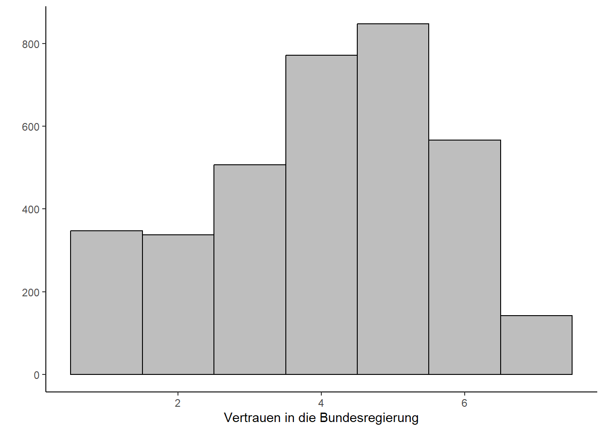
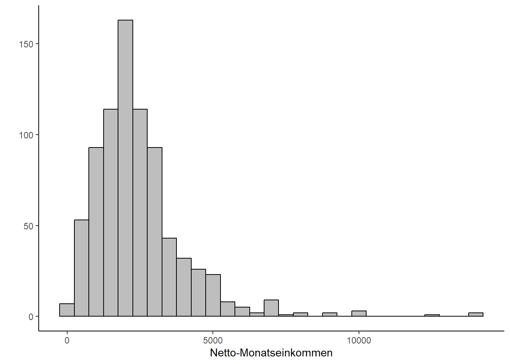

Die Bestimmung der Zentrale Tendenz mittels t-Tests
Author
Katharina Maubach
Bild generiert von Midjourney
Wir nutzen den t-test um Mittelwertunterschiede zwischen zwei Gruppen zu analysieren.
Video
Wir unterscheiden grundsätzlich in zwei verschiedene Arten von t-Test:
den t-Test für unabhängige Stichproben (two-paired-test) sowie
den t-Test für verbundene Stichprobene (paired test)
t-test für unabhängige Stichproben
Mit dem t-test für unabhängige Stichproben überprüfen wir, ob sich die Mittelwerte in zwei gemessenen Stichproben unterscheiden. Die Stichproben sind dann unabhängig, wenn sie aus zwei unterschiedlichen Gruppen stammen und daher sich nicht gegenseitig beeinflussen können. Ein solches Beispiel liegt zum Beispiel dann vor, wenn wir schauen ob das Alter (dichotom kodiert in alt vs jung) einen Einfluss auf das Einkommen hat. In diesem Fall kann eine Person zum Untersuchungszeitpunkt nicht gleichzeitig alt und jung sein, sondern fällt in einer der beiden Gruppen. Ein anderes typisches Anwendungsbespiel ist der Vergleich von zwei Gruppen im Rahmen eines Experimentaldesign. Hier kann ein Proband ebenfalls nur einer der Untersuchungsgruppe zugeordnet sein.
t-test für verbundene Stichproben
Der t-test für verbundene Stichproben wiederum misst, inwiefern sich Mittelwerte bei denselben Personen oder Fällen verändern. Wenn wir bei unserem Beispiel mit dem Einflusses des Alters auf das Einkommen bleiben, so könnten wir dieselben Personen zu zwei Zeitpunkten befragen: einmal wenn sie jung sind und dann zu einem späteren Zeitpunkt noch einmal. In diesem Fall sind unsere Stichproben nicht unabhängig, da die Messwerte von denselben Personen stammen und ggf. der frühere Messzeitpunkt den späteren beeinflussen kann.
Der Einstichprobentest
Zusätzlich gibt es noch den Einstichprobentest oder auch one-sample-test. Hier vergleichen wir nicht zwei Gruppenmittelwerte miteinander, sondern den Mittelwert einer Gruppe mit einem bereits bekannten feststehenden Wert. Wir können so beispielsweise überprüfen, ob das Einkommen in einer Stichprobe dem deutschlandweiten Mittelwert entspricht, sofern dieser uns vorab bekannt ist.
1 t-Test für unabhängige Stichproben
Wir schauen uns zunächst den t-Test für unabhängige Stichproben an.
1.1 Datenmanagement
Wir beginnen mit dem Laden der notwendigen Pakete.
Um mit dem Datensatz zu arbeiten benötigen wir einige grundlegende Schritte des Datenmanagements (ausführliche Erklärungen finden sich hier). Für unseren t-test für unabhängige Stichproben möchten wir uns anschauen, wie sich der Wohnort der Befragten auf ihr Vertrauen in die Bundesregierung auswirkt. Wir nutzen dazu die folgenden Variablen:
Variable
Beschreibung
Ausprägungen
eastwest
Erhebungsgebiet West-Ost
1= Alte Bundesländer (Westen)
2 = Neue Bundesländer (Osten)
pt12
Vertrauen in die Bundesregierung
-42 = Datenfehler
-11 = TNZ Split
-9 = Keine Angabe
1 = Gar kein Vertrauen
…
7 = Großes Vertrauen
Innerhalb unseres Datenmanageements schließen wir fehlerhafte und fehlende Werte der Variablen pt12 aus und benennen diese anschließend um:
Wir schließend fehlende Werte (siehe Tabelle oben aus). Da diese alle negativ sind, können wir einfach alle Werte kleiner als 0 ausschließen.
2
Hier benennen wir die Variablen anders um unsere weitere Arbeit zu vereinfachen.
3
Wir bringen unsere Daten in das korrekte Format. Für den t-Test muss die abhängige Variable als Vektor vorliegen und die unabhängige Variable als Faktor.
1.2 Deskriptives der abhängigen Variablen
Als ersten Schritt schauen wir uns die deskriptiven Statistiken unserer abhängigen Variablen Vertrauen in die Regierung für die beiden Faktorstufen unserer unabhängigen Variablen an.
Anhand dieser deskriptiven Daten sehen wir, dass das Vertrauen in die Bundesregierung in den alten Bundesländern im Mittelwert von 4,15 stärker ausgeprägt ist als in den neuen Bundesländern (Mittelwert von 3,86). Um zu prüfen, ob dieser Unterschied der Mittelwerte statistisch signifikant ist, berechnen wir in einem zweiten Schritt die Teststatistik des t-tests. Zunächst müssen wir jedoch prüfen, ob unsere Daten für die Berechnung geeignet sind. Dazu führen wir eine Voraussetzungsprüfung durch.
1.3 Voraussetzungsprüfung
Bei dem t-test handelt es sich um ein statistisches Verfahren. Um die Güte der Ergebnisse sicherzustellen müssen dabei einige Voraussetzungen beachtet werden. Dies sind im Überblick:
die Unabhängigkeit der Messung (siehe oben)
die korrekte Skalierung der UV (=Faktor) und AV (=numerisch)
keine extremen Ausreißer
die Normalverteilung der abhängigen Variablen
die Varianzhomogenität
1.3.1 Skalierung der UV und AV
Die abhängige Variable muss als numerischer Vektor vorliegen, die unabhängige Variable wiederum als Faktor (mit zwei Ausprägungen). Die korrekte Skalierung der Variablen haben wir bereits innerhalb des Data Managements sichergestellt, können uns aber zusätzlich mit dem Befehl class noch einmal einen Überblick über das Skalenniveau unserer Variablen verschaffen.
Da Ausreißer sich stark auf die Berechnung von Mittelwerten auswirken können, sollten möglichst keine extremen Ausreißer innerhalb unserer zu testenden Variablen vorliegen. Es gibt verschiedene Methoden um Ausreißer zu bestimmen siehe hier, wir nutzen im vorliegenden Fall die Tukey-Fence Methoden (Tukey, 1977), die jene Fälle als Ausreißer ermitteln, die um den 1.5 fachen Interquartilsabstand von Q1 und Q3 entfernt liegen.
Wir filtern unsere Daten, sodass wir jeweils die Ausreißer für unsere beiden zu vergleichenden Gruppen angezeigt bekommen.
2
Wir nutzen pull um die Ausreißer nur für die Spalte trustreg zu berechnen. Pull ist vergleichbar mit dem $-Zeichen zur Variablenauswahl.
3
Wir nutzen den Befehl LocScaleB aus dem Package univOutl. Innerhalb des Befehls, geben wir an, dass die Berechnung der Ausreißer anhand des Interquartilsabstandes (method = "IQR") erfolgen soll.
Innerhalb unserer Daten finden sich für beide Gruppen (Alte und Neue Bundesländer) keine Ausreißer in den Daten. Falls wir Ausreißer in den Daten hätten, müssten wir uns diese Datenpunkte genauer ansehen und anschließend entscheiden, ob wir diese aus unserer Analyse ausschließen möchten (mehr dazu findet sich hier). Grundsätzlich empfiehlt es sich, Ausreißer nur dann auszuschließend, wenn diese logisch nicht möglich sind (beispielsweise eine Mediennutzung eines Mediums von 30 Stunden pro Tag oder eine Altersangabe von 330).
1.3.3 Normalverteilung der AV
Eine weitere wichtige, leicht vorab zu prüfende Bedingung, die für einen Mittelwertvergleich mittels t-test erfüllt sein muss, ist die Normalverteilung der abhängigen Variable. Diese können wir graphisch überprüfen:
ggplot(daten, aes(trustreg)) +geom_histogram(aes(y =after_stat(count)),color ="black", fill ="grey", binwidth =1) +labs(x ="Vertrauen in die Bundesregierung",y ="")
1
In R nutzen wir das Paket ggplot2 von Wickham et al. um ein Histogramm auszugeben. Zunächst müssen wir hier das Paket ggplot2 mit dem Befehl ggplot() aufrufen. Anschließend spezifizieren wir innerhalb der Klammer unseren Datensatz (hier daten) und unter aes unsere Variable (hier trustgreg).
2
Die Spezifizierungen innerhalb der Klammern unseres Histogramms geben an, dass dieses auf den Zahlen unseres Datensatzes beruhen soll (aes(y = after_stat(count)), wir die Außenumrandung schwarz color = black und die Füllfarbe grau wünschen (fill = grey). Diese Spezifikationen sind optional, sorgen jedoch für ein schöneres Aussehen unserer Grafik.
3
Mit binwidth = 1 verweisen wir hier auf die Breite der Balken unseres Histogramms.
4
Für ein verschönertes Aussehen unseres Graphen nutzen wir den Befehl labs um zusätzlich die Achsen zu beschriften.

Wir sehen anhand der Grafik, dass das Vertrauen in die Bundesregierung leicht rechtssteil ist, also die Teilnehmer grundsätzlich ein höheres Vertrauen in die Bundesregierung angeben.
Zusätzliche Gewissheit bezüglich des Vorliegens der Normalverteilung bietet der Kolmogorov-Smirnov-Test oder der Shapiro-Wilk-Test (welcher für kleinere Stichproben zwischen 3 und 5000 Fällen konzipiert ist). In R erhalten wir diese Tests mit dem Befehl LillieTest() aus dem Paket DescTools() bzw. shapiro.test(). Beide Tests testen auf Abweichung von der Normalverteilung, demnach sollte diese nicht signifikant ausfallen (da ein signifikanter Test aussagt, dass eine Abweichung von der Normalverteilung besteht, was wir nicht möchten).
daten %>%do(tidy(shapiro.test(.$trustreg)))
# A tibble: 1 × 3
statistic p.value method
<dbl> <dbl> <chr>
1 0.935 1.24e-36 Shapiro-Wilk normality test
Im vorliegenden Beispiel ist der Shapiro-Tests signifikant. Allerdings reagiert der Test insbesondere bei großen Stichproben sehr sensibel, sodass bereits leichte Abweichungen von der Normalverteilung (etwa durch Ausreißer) die Tests signifikant werden lassen; in diesen Fällen ist es sinnvoll eher auf die graphische Überprüfung (siehe oben) zu schauen. Hier sehen wir, dass die Normalverteilung nicht drastisch verletzt ist. Grundsätzlich ist der t-Test auch recht robust bezüglich Abweichungen von der Normalverteilung. Alternativ können Nicht-parametrische Testverfahren genutzt werden.
1.3.4 Varianzhomogenität
Die letzte Voraussetzung, die erfüllt sein muss, ist die Homogenität der Fehlervarianzen. Um diese zu testen, nutzen wir den Levene-Test.
daten %>%drop_na(eastwest, trustreg) %>%leveneTest(trustreg~eastwest, data = .)
1
Wir schließen fehlende Werte für die unabhängige und abhängige Variable aus.
2
Innerhalb der Klammer müssen wir zunächst unsere abhängige Variable angeben. Danach folgt eine Tilde (~). Im Anschluss müssen wir unsere unabhängige(n) Variablen angeben. Die Tilde sagt quasi, dass unsere abhängige Variable durch unsere unabhängigen Variablen bestimmt wird. Haben wir nur eine abhängige Variable, so geben wir diese an.
Levene's Test for Homogeneity of Variance (center = median)
Df F value Pr(>F)
group 1 9.5219 0.002046 **
3516
---
Signif. codes: 0 '***' 0.001 '**' 0.01 '*' 0.05 '.' 0.1 ' ' 1
Wenn der Levene-Test statistisch signifikant ausfällt, sollte die Hypothese homogener Varianzen abgelehnt werden. Falls der Test wie im vorliegenden Fall signifikant ausfällt (da der Pr(>F-Wert) kleiner als 0.05 ist) wurde die Voraussetzung der Homogenität der Fehlervarianzen verletzt. In einem solchen Fall können wir wahlweise auf Nicht-parametrische Testverfahren ausweichen.
1.4 Durchführung des t-Tests
Bevor wir uns den nicht-parametrischen Testverfahren zuwenden, schauen wir uns zunächst die Durchführung des parametrischen Student’s t-Tests an. Diesen nutzen wir, wenn alle Voraussetzungen innerhalb der Voraussetzungsprüfung erfüllt sind (wenngleich man wahlweise auch direkt standardmäßig den Welch-Test (siehe Nicht-parametrische Testverfahren nutzen kann). Dazu nutzen wir den Befehl t.test aus dem Paket mosaic.
Durchführung des t-Tests mittels der Funktion t.test aus dem mosaic-Package.
3
Als Alternative verwenden wir hier two.sided, da wir zweiseitig testen. Wenn wir innerhalb unserer Hypothese eine klare Aussage bezüglich der Richtung des t-Testes machen, können wir auch einseitig testen. In diesem Fall würden wir "less" oder "greater" verwenden.
4
Wenn wir Varianzhomogenität annehmen (siehe Levene-Test der Voraussetzungsprüfung), verwenden wir hier var.equal = T. Alternativ können wir den nicht-parametrischen Welch-Test rechnen (siehe nicht-parametrische Testverfahren), welche in R die default-Einstellung darstellt.
Two Sample t-test
data: trustreg by eastwest
t = 4.9349, df = 3516, p-value = 0.0000008391
alternative hypothesis: true difference in means between group ALTE BUNDESLAENDER and group NEUE BUNDESLAENDER is not equal to 0
95 percent confidence interval:
0.1726028 0.4001616
sample estimates:
mean in group ALTE BUNDESLAENDER mean in group NEUE BUNDESLAENDER
4.147752 3.861369
In einem zweiten Schritt müssen wir zusätzlich die Effektstärke cohens’ d (Cohen, 1992) berechnen. Der t-Test selbst gibt uns eine Aussage über die Signifikanz der Ergebnisse, also wie wahrscheinlich es ist, dass der von uns gefundene Effekt nicht zufällig ist. Cohen’s d wiederum macht eine Aussage zur Effektsträrke, also wie stark ein signifikanter Mittelwertunterschied ist. Dazu nutzen wir die Funktion cohens_d aus dem Paket effectsize.
daten %>%drop_na(eastwest, trustreg) %>%cohens_d(trustreg~eastwest, data = .)
1
Ausschließen von fehlenden Daten.
2
Ausgeben der Effektstärke nach Cohen (1992)
Cohen's d | 95% CI
------------------------
0.18 | [0.11, 0.25]
- Estimated using pooled SD.
1.5 Interpretation des Outputs
Innerhalb des Outputs des t-tests erhalten wir die Teststatistik (t), die Freiheitsgrade (df), das Signifikanzniveau (p-value), das 95% Konfidenzintervall, sowie die Mittelwerte unserer beiden Vergleichsgruppen. Insbesondere interessiert uns in diesem Fall der Signifikanzwert (p-Value). Wenn dieser, wie in unserem Fall unter 0.05 liegt, ist der t-Test signifikant, dass bedeutet, dass die gefunden Mittelwertunterschiede mit 95% Wahrscheinlichkeit nicht zufällig sind.
Bezüglich der Interpretation der Effektstärke gilt nach Cohen (1992):
Cohen’s d
Effektstärke
0 - 0.19
kein, bzw. sehr geringer Effekt
0.2 - 0.49
geringer Effekt
0.5 - 0.79
mittlerer Effekt
größer 0.8
starker Effekt
In unserem Fall haben wir eine Effektstärke von 0.18. Demnach ist der gefundene Effekt zwar signifikant, aber weist keine bzw. nur eine sehr geringe Effektstärke auf.
Wie gebe ich die Ergebnisse korrekt an?
Die Ergebnisse des t-tests werden üblicherweise im Text angegeben. Für diese Angabe werden die folgenden Informationen benötigt:
✅ die Mittelwerte und Standardabweichung der einzelnen Vergleichsgruppen
✅ der df-Wert
✅ der t-Wert
✅ der p-Wert
✅ die Effektgröße
Das Format ist üblicherweise:
Beispiel: Personen mit Lebenswohnsitz in den alten Bundesländern (M = 4.15;SD=1.58) besitzen ein höheres Vertrauen in die Bundesregierung als Personen mit Lebenswohnsitz in den neuen Bundesländern (M = 3.86;SD=1.71). Ein Student’s T-Test zeigt, dass der Lebenwohnsitz einen signifikanten Einfluss auf das Vertrauen in Bundesregierung hat t(3516)= 4.9349, p<0,001. Die Effektstärke nach Cohen (1992) weist jedoch mit d = 0,18 auf einen nicht vorhanden, bzw. nur sehr geringen Effekt hin.
1.6 Nicht-parametrische Testverfahren
Wenn einzelne Voraussetzungen verletzt wurden (siehe oben), können statt dem normalen t-test nicht-parametrische Testverfahren verwendet werden.
Das geläufigste Testverfahren ist der Welch-Test, welcher in R das standardmäßige Testverfahren darstellt. Der Welch-Test ist robust gegenüber Verletzungen der Varianzhomogenität sowie der Normalverteilung (Rasch et al., 2011), sodass dieser Test auch bei nicht-idealen Daten gerechnet werden kann. Verschiedene Autoren empfehlen den Test sogar standardmäßig immer zu berechnen, da der Test auch bei homogenen Varianzen der Daten eingesetzt werden kann. Den Welch-Test können wir in R über die bereits bekannte Funktion t.test aufrufen. Wir müssen lediglich bei dem Zusatz var.equal = T zu var.equal = F ändern. Alternativ können wir den Zusatz auch einfach weglassen, da innerhalb des mosaic-Packages standardmäßig der Welch-Test gerechnet wird.
Für den Welch-Test müssen wir lediglich den Zusatz var.equal auf F oder FALSE setzen.
Welch Two Sample t-test
data: trustreg by eastwest
t = 4.8163, df = 2224.7, p-value = 0.000001561
alternative hypothesis: true difference in means between group ALTE BUNDESLAENDER and group NEUE BUNDESLAENDER is not equal to 0
95 percent confidence interval:
0.1697784 0.4029860
sample estimates:
mean in group ALTE BUNDESLAENDER mean in group NEUE BUNDESLAENDER
4.147752 3.861369
Anschließend müssen wir erneut die Effektstärke berechnen, wobei wir hier ebenfalls durch den Zusatz var.equal= F angeben, dass unsere Fehlervarianzen nicht homogen sind:
Cohen's d | 95% CI
------------------------
0.17 | [0.10, 0.24]
- Estimated using un-pooled SD.
Die Ergebnisse zeigen, dass unser Test weiterhin signifikant ist, allerdings die Effektstärke noch ein wenig schlechter geworden ist. Die Ergebnisse geben wir genauso wie die Ergebnisse des normalen Student’s T-Test an (siehe oben), wobei wir im Text darauf verweisen, dass wir aufgrund der Verletzungen der Voraussetzungen einen nicht-parametrischen Welch-Test gerechnet haben. Zudem ist es sinnvoll, bei Verletzungen der Normalverteilung statt dem Mittelwert den Median anzugeben.
Alternativ zum Welch-Test gibt es noch den Mann-Whitney-U Test bzw. den Wilcoxon-Rangsummentest. Beide Verfahren testen fast dasselbe (zur Historie der Testverfahren siehe hier) und können angewandt werden, wenn die Voraussetzung der Normalverteilung verletzt wurde. Da die Testverfahren jedoch von etwas anderen Hypothesen ausgehen und der Welch-Test ebenfalls robust gegenüber der Verletzung der Normalverteilung (bei Gruppen ab ca. n=30) ist, empfiehlt sich hier der Welch-Test.
2 t-Test für unabhängige Stichproben
Der t-Test für verbundene bzw. abhängige Stichproben prüft, ob zu zwei unterschiedlichen Zeitpunkten signifikante Mittelwertunterschiede bestehen. Anhand dieses Datensatzes können wir den t-Test für verbundene Stichproben nicht durchführen, daher gehen wir an dieser Stelle nicht näher auf das Verfahren ein. Ein Beispiel sowie weitere Infos zur Durchführung des Tests findet ihr bei Björn Walther sowie Statistik Guru. Die nicht-parametrische Alternative des Tests ist der Wilcoxon-Vorzeichen-Rangtest.
3 t-Test für Einstichproben
Beim t-Test für Einstichproben testen wir, ob die Werte unserer Stichprobe einem vorab festgelegten Wert entsprechen. So können wir beispielsweise mit Blick auf das Einkommen schauen, ob das monatliche Nettoeinkommen aus unserer Stichprobe dem Bundesdurchschnitt im Jahr 2021 entspricht. Gemäß dem statistischen Bundestamt betrug das Nettoeinkommen in Deutschland im Jahr 2020 2.165 Euro pro Monat (25.980 Euro pro Jahr). Dies ist demnach unser Testwert gegen den wir testen.
3.1 Data Management
Innerhalb des Datamanagements benennen wir zunächst die entsprechende Variable aus den Allbus-Daten in einkommen um und filtern fehlende Werte hinaus.
Der Einstichprobentest setzt ähnlich wie der two-sided und paired test eine Normalverteilung der abhängigen Variablen voraus. Diese können wir erneut mit dem Shapiro-Wilk-Test überprüfen:
daten_one %>%do(tidy(shapiro.test(.$einkommen)))
# A tibble: 1 × 3
statistic p.value method
<dbl> <dbl> <chr>
1 0.831 3.73e-28 Shapiro-Wilk normality test
Da unser Ergebnis signifikant ausfällt, müssen wir hier leider die Normalverteilung unserer AV ablehnen (wir testen ja auf signifikante Abweichung von der Normalverteilung, daher möchten wir bei diesem Test nicht ein signifikantes Ergebnis haben). Um weitere Gewissheit zu erlangen, prüfen wir die Normalverteilung zusätzlich optisch mit einem Histogramm:
In R nutzen wir das Paket ggplot2 von Wickham et al. um ein Histogramm auszugeben. Zunächst müssen wir hier das Paket ggplot2 mit dem Befehl ggplot() aufrufen. Anschließend spezifizieren wir innerhalb der Klammer unseren Datensatz (hier daten_one) und unter aes unsere Variable (hier einkommen).
2
Die Spezifizierungen innerhalb der Klammern unseres Histogramms geben an, dass dieses auf den Zahlen unseres Datensatzes beruhen soll (aes(y = after_stat(count)), wir die Außenumrandung schwarz color = black und die Füllfarbe grau wünschen (fill = grey). Diese Spezifikationen sind optional, sorgen jedoch für ein schöneres Aussehen unserer Grafik.
3
Mit binwidth = 500 verweisen wir hier auf die Breite der Balken unseres Histogramms.
4
Für ein verschönertes Aussehen unseres Graphen nutzen wir den Befehl labs um zusätzlich die Achsen zu beschriften.

Die Grafik verstärkt die Einschätzung des Shapiro-Wilk-Tests, dass keine Normalverteilung vorliegt. In einem solchen Fall würden wir auf den nicht-parametrische one-sample Wilcoxon-Test ausweichen. Der Vollständigkeit halber führen wir nachfolgend dennoch beide Testverfahren auf.
3.3 Durchführung des t-tests für Einstichproben
Wie bereits zuvor aufgeführt liegt das monatliche Nettoeinkommen laut Statista bei 2165 Euro. Innerhalb der bekannten Funktion t-test geben wir diesen Wert als den “wahren Wert” des Mittelwertes mit dem Zusatz mu=2.165 an
t.test(daten_one$einkommen , mu =2165)
One Sample t-test
data: daten_one$einkommen
t = 5.102, df = 795, p-value = 0.0000004207
alternative hypothesis: true mean is not equal to 2165
95 percent confidence interval:
2343.44 2566.61
sample estimates:
mean of x
2455.025
cohens_d(daten_one$einkommen, data = daten, mu =2165)
Cohen's d | 95% CI
------------------------
0.18 | [0.11, 0.25]
- Deviation from a difference of 2165.
3.4 Interpretation des Outputs
Innerhalb des Output des one-sample-t-Testes erhalten wir die Teststatistik (t), die Freiheitsgrade(df), den Signifikanzwert (p-value) sowie das 95% Konfidenzintervall des wahren Wertes und den Mittelwert unserer Stichprobe (mean of x).
Grundsätzlich interessiert uns bei einem Blick auf den Output vor Allem der p-value. Wenn dieser unter 0,05 liegt, ist unser Test signifikant. Im vorliegenden Fall ist der Test mit p < .000 signifikant, dies bedeutet unsere Stichprobe weicht signifikant von unserem vorab definierten Vergleichswert ab. Dementsprechend ist der Mittelwert des Nettoeinkommens unserer Stichprobe signifikant höher (siehe mean of x) als unser Vergleichswert.
Wie gebe ich die Ergebnisse korrekt an?
Die Ergebnisse des Einstichproben-t-tests werden üblicherweise in Textform angegeben. Für diese Angabe werden die folgenden Informationen benötigt:
✅ der df-Wert
✅ der t-Wert
✅ der p-Wert
✅ der d-Wert
Das Format ist üblicherweise:
Das Nettoeinkommen innerhalb unserer Stichprobe (M = 2455.025) ist signifikant höher (p < .000) als der Vergleichswert von 2165, welcher das Durchschnittsnettoeinkommen der deutschen Bevölkerung repräsentiert, t(795) = 5,102. Nach Cohen (1992) handelt es sich jedoch um keinen bzw. einen nur sehr geringen Effekt (d = 0,18).
3.5 Nicht-parametrischer Test: one sample Wilcoxon Test
Wenn die Voraussetzung der Normalverteilung nicht gegeben ist (siehe hier) können wir statt dem normalen Einstichproben-t-Test den one sample Wilcoxon Test berechnen. Auch bei diesem geben wir mit dem Zusatz mu= den Wert an, gegen welchen wir testen möchten.
wilcox.test(daten_one$einkommen, mu =2165)
Wilcoxon signed rank test with continuity correction
data: daten_one$einkommen
V = 170966, p-value = 0.05674
alternative hypothesis: true location is not equal to 2165
Als Output erhalten wir lediglich die Teststatistik (V) und den Signifikanz-Wert (p-value). Interessanterweise ist der nicht-parametrische Wilcoxon-Test im Gegensatz zum parametrischen Test nicht signifikant (p-value über 0.05). Da unsere voraussetzungsprüfung darauf hindeutet, dass die Daten nicht normalverteilt sind, würden wir in diesem Fall dem nicht-parametrischen Wilcoxon-Test folgen. Dementsprechend findet sich kein signifikanter Unterschied zwischen unserer Stichprobe und dem deutschen Durchschnittseinkommen.
Der Wilcoxon signed rank Test zeigt, dass das Nettoeinkommen innerhalb unserer Stichprobe (Median = 2200) nicht signifikant höher als der Vergleichswert von 2165, welcher das Durchschnittsnettoeinkommen der deutschen Bevölkerung repräsentiert, V = 170966, p = .05.
3.6 Literatur
Literatur und Beispiele aus der Praxis
Cohen, J. (1992). A power primer. Psychological bulletin, 112(1), 155-159.
Rasch, D., Kubinger, K. D., & Moder, K. (2011). The two-sample t test: pre-testing its assumptions does not pay off. Statistical papers, 52, 219-231
Wir empfehlen euch folgende Lehrbücher und Online-Materialien, falls ihr weiterführende Informationen braucht.
📖 Gehrau, V., Maubach, K., & Fujarski, S. (2022). Einfache Datenauswertung mit R. Link
📖 StatistikGuru (2023). Gepaarter t-Test in R Link
📖 Walther, B. (2022). t-Test für abhängige Stichproben in R rechnen und interpretieren Link
📖 Masch, L., Kieslich, K., Huseljić, K., Wähner, M., & Neef, J.-S. (2021). R - Ein Einführungsskript Link
📖 Field, Z., Miles, J., & Field, A. (2012). Discovering statistics using R. Discovering statistics using r, 1-992. Link